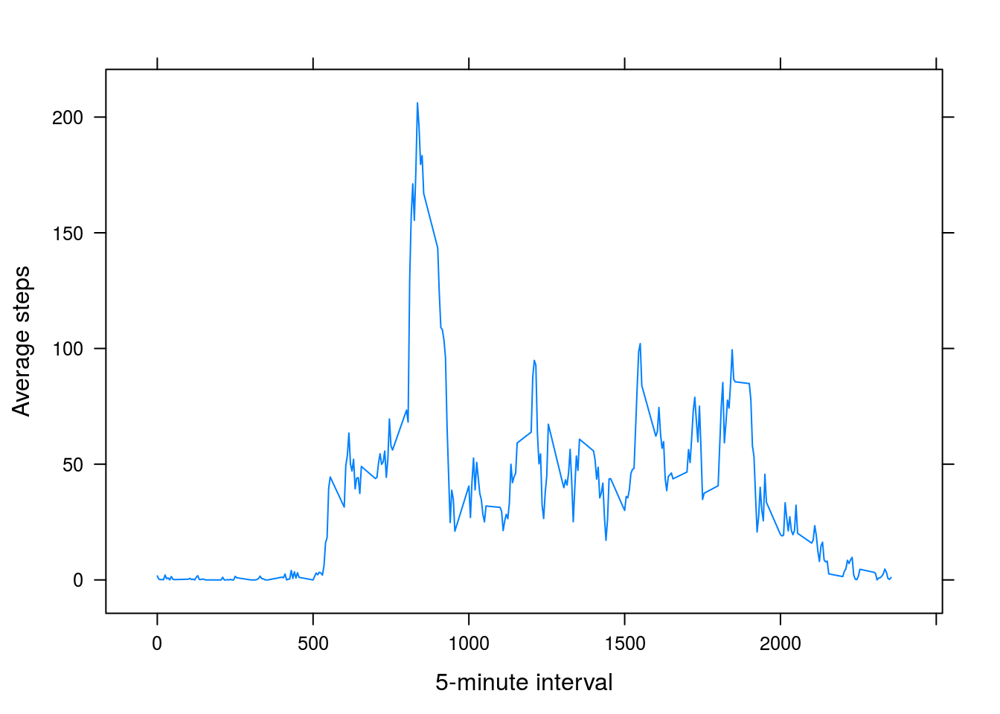
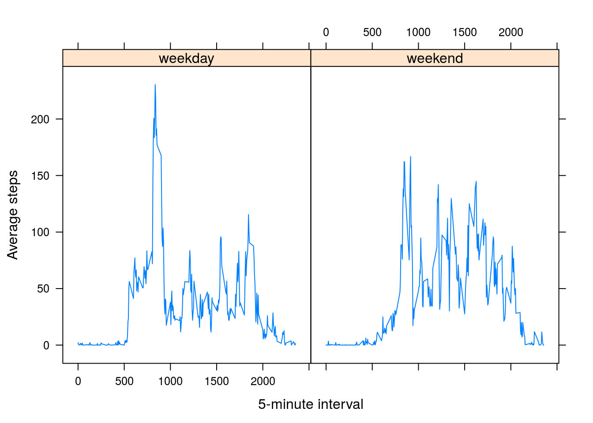

Reproducible Research: Peer Assessment 1
Loading and preprocessing the data
The data can be found in the “activity.zip”" file.
library("lattice")
Sys.setlocale("LC_ALL","C")## [1] "LC_CTYPE=C;LC_NUMERIC=C;LC_TIME=C;LC_COLLATE=C;LC_MONETARY=C;LC_MESSAGES=ca_ES.UTF-8;LC_PAPER=ca_ES.UTF-8;LC_NAME=C;LC_ADDRESS=C;LC_TELEPHONE=C;LC_MEASUREMENT=ca_ES.UTF-8;LC_IDENTIFICATION=C"unzip("activity.zip")
activity = read.csv("activity.csv")
summary(activity)## steps date interval
## Min. : 0.00 2012-10-01: 288 Min. : 0.0
## 1st Qu.: 0.00 2012-10-02: 288 1st Qu.: 588.8
## Median : 0.00 2012-10-03: 288 Median :1177.5
## Mean : 37.38 2012-10-04: 288 Mean :1177.5
## 3rd Qu.: 12.00 2012-10-05: 288 3rd Qu.:1766.2
## Max. :806.00 2012-10-06: 288 Max. :2355.0
## NA's :2304 (Other) :15840What is mean total number of steps taken per day?
For this part of the assignment, we remove the NA values.
steps.by.day = with(activity[!is.na(activity$steps),],aggregate(x=steps, by=list(date=date),FUN="sum"))
names(steps.by.day)[2]<-"total.steps"The data histogram:
histogram(steps.by.day$total.steps,xlab="Total daily step count")mean.steps = mean(steps.by.day$total.steps)The mean number of steps is 1.076618910^{4}.
median.steps = median(steps.by.day$total.steps)The median number of steps is 10765.
What is the average daily activity pattern?
To analize this problem, we will contruct a plot of the average step count for each 5 minute interval.
steps.by.interval = with(activity[!is.na(activity$steps),],aggregate(x=steps, by=list(interval=interval),FUN="mean"))
names(steps.by.interval)[2]<-"average.steps"
xyplot(average.steps~interval,data=steps.by.interval,type='l',xlab="5-minute interval", ylab="Average steps",as.table=T)
We see that the interval 835 is the one with the highest average.
Imputing missing values
There are 2304 NA values in the steps field of the activity dataset.
We will use the mean value for each interval to impute the missing values.
filled.activity = activity
fill.na <- function(interval){
steps.by.interval$average.steps[head(steps.by.interval$interval==interval,1)]
}
i=is.na(filled.activity$steps)
filled.activity$steps[i] <- unlist(lapply(filled.activity$interval[i],fill.na))
steps.by.day = with(filled.activity,aggregate(x=steps, by=list(date=date),FUN="sum"))
names(steps.by.day)[2]<-"total.steps"The effect of this process can be seen in the histogram, where the highest bin has been increased from 30 to 40.
histogram(steps.by.day$total.steps,xlab="Total daily step count")
mean.steps = mean(steps.by.day$total.steps)The mean number of steps is 1.076618910^{4}.
median.steps = median(steps.by.day$total.steps)The median number of steps is 1.076618910^{4}.
The NA inputation process has affected the median, moving it towards the median.
Are there differences in activity patterns between weekdays and weekends?
filled.activity$weekday = factor(ifelse(weekdays(as.POSIXct(filled.activity$date)) %in% c("Saturday","Sunday"), "weekend","weekday"))
steps.by.interval = with(filled.activity,aggregate(x=steps, by=list(interval=interval,weekday=weekday),FUN="mean"))
names(steps.by.interval)[3]<-"average.steps"
xyplot(average.steps~interval|weekday,data=steps.by.interval,type='l',xlab="5-minute interval", ylab="Average steps",as.table=T)
By plotting the average steps for each interval and day type one can see that weekdays have a greater concentration of activity on the morning whereas weekends are more equally distributed on the entire day.